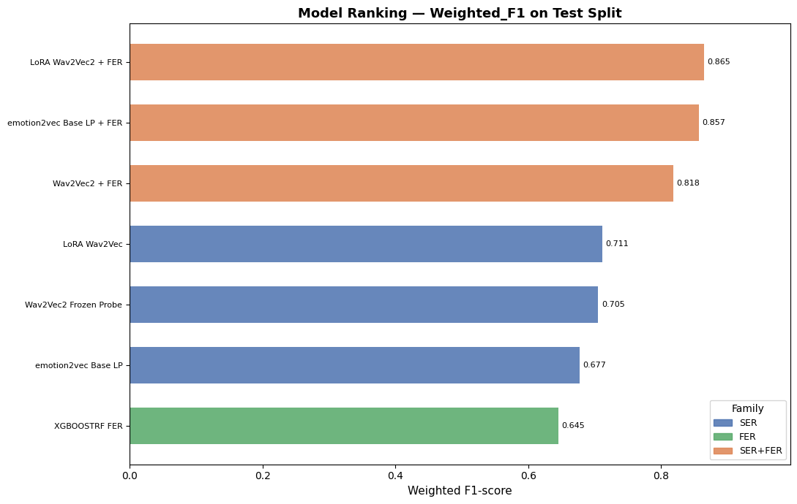

← Interactive overview · PDF · GitHub
Tharen Emmanuel Candi tharenemmanuel.candi@studenti.unipd.it
Speech Emotion Recognition (SER) is a critical component for many downstream applications, but it requires a deep understanding of intricate paralinguistic cues and pushes the limits of vocal acoustic variability. Consequently, SER remains a strong benchmark for evaluating speech foundation models (SFMs), as it tests the richness of their embedding spaces. It also serves as a candidate task for the application of multimodal models, as human emotion recognition is inherently multimodal.
Using the RAVDESS dataset as a benchmark, we evaluate the effectiveness of self-supervised encoders, comparing a general SFM (wav2vec 2.0) with an emotion-specialised SSL model (emotion2vec). We also evaluate the effectiveness of late fusion (temperature-calibrated sum fusion) with a facial emotion recognition (FER) modality.
This project addresses three primary research questions on the performance of ER on RAVDESS:
All systems in this study use the same actor-disjoint split, labels, and test partition.
RAVDESS is a validated multimodal emotional dataset with controlled statements, multiple emotions, and explicit intensity levels, recorded from 24 professional actors [1]. Its strengths are recording quality and balanced class structure; its key limitation is that it remains acted and therefore only partially representative of natural conversational affect [1].
RAVDESS was selected for both scientific and practical reasons:
wav2vec 2.0 learns contextual speech representations through masked prediction over broad, general-purpose speech corpora (e.g. LibriSpeech, LibriVox-scale data) [2]. Its pretraining objective targets speech structure generally, thus SER performance depends on how well an adapted classifier head can recover affect-relevant structure that the encoder was never explicitly optimised to represent. We use the wav2vec2-base checkpoint, following Pepino et al.’s finding that base-scale embeddings give their strongest SER results [5]; the same work also finds that emotion cues are distributed across multiple transformer layers rather than concentrated at the top, which motivates the layer-weighted pooling used in Section 3.5.
In contrast, emotion2vec uses emotion-centered self-supervised
distillation on ~262h of emotion-labeled speech (IEMOCAP, MELD, MEAD,
CMU-MOSEI, MSP-Podcast) [3], making it task-aligned by construction. In
this project, we use the iic/emotion2vec_base checkpoint as
a frozen backbone and train a lightweight classifier head on top under
the same split/label protocol used for wav2vec.
LoRA offers a middle path for adapting the general-purpose encoder toward the task without the catastrophic forgetting and overfitting risked by full fine-tuning on small SER datasets [4].
Facial blendshape coefficients (52 MediaPipe expression channels) are used instead of raw video as video is computationally expensive and contains substantial variation that is not directly useful for FER (for example background, lighting, and appearance-specific detail). Blendshapes reduce the information to facial-action intensity directly relevant to expression [8].
As supported by the Mehrabian 7-38-55 rule, combining modalities helps disambiguate cases that are ambiguous in audio alone (e.g. laughter vs. scream, sad vs. neutral prosody) [10], which is evaluated in section 4.
The calm -> neutral merge is justified by the following factors:
However, the merge introduces a mild class imbalance, so inverse-frequency class weights are used during training of the supervised audio and visual classifiers.
Actor-disjoint partitioning avoids speaker leakage, better tests generalisation by preventing actor memorisation.
Data loading follows the split protocol directly: Subset
datasets are wrapped in PyTorch DataLoaders with
batch_size=8, shuffle=True for training and
batch_size=64, shuffle=False for validation/test. The
training loader is shuffled to reduce order effects during optimisation,
while validation/test loaders are fixed for deterministic checkpoint
selection and reporting. For late fusion, audio and blendshape loaders
are both kept ordered (shuffle=False) so each batch
contains the same utterances in the same order across modalities,
guaranteeing 1:1 pairing at fusion time. Blendshape features were
precomputed offline and stored on Google Drive, then matched back to the
xbgoose/ravdess Hugging Face split indices using an
explicit alignment strategy; this prevents cross-split mixing and
therefore avoids data leakage in the FER and fusion evaluations.
For both wav2vec-based models, SpecAugment was injected through the
backbone configuration with mask_time_prob = 0.05,
mask_time_length = 15,
mask_feature_prob = 0.05, and
mask_feature_length = 12. Time masking is kept small to
avoid removing short prosodic cues that could be important for emotion
discrimination.
| Model | Backbone | Adaptation strategy |
|---|---|---|
| wav2vec2 weighted-layer linear probe | wav2vec2-base | Backbone frozen; all 13 hidden states are softmax-weighted, then passed through Linear(hidden_size -> 128) + ReLU + Dropout(0.25), mean-pooled over time, and classified with Linear(128 -> 7) [5] |
| LoRA-adapted wav2vec 2.0 | wav2vec2-base | LoRA adapters on attention projections (q_proj,
v_proj) with rank r=4, alpha=4, dropout=0.25, and bias
disabled; the same softmax-weighted 13-layer pooling is used, followed
by a sigmoid feature gate, LayerNorm(hidden_size), and
Linear(hidden_size -> 7) [4] |
| emotion2vec linear probe | iic/emotion2vec_base | Backbone frozen; pooled embedding (hidden size 768) -> Linear(768 -> 128) + ReLU + Dropout(0.20) + Linear(128 -> 7) |
For the wav2vec-based models, the layer weights are learned over all 13 hidden-state tensors produced by wav2vec2-base: the CNN feature-extractor output plus the 12 transformer layers, following Pepino et al. [5], followed by softmax normalisation. The wav2vec2 weighted-layer linear probe keeps a small 128-dimensional projection head to stay lightweight. The LoRA branch keeps the same layer weighting but adds a feature gate and a direct hidden-size classifier so the effect of backbone adaptation is isolated from changes in downstream capacity.
The LoRA setting is intentionally conservative: r=4 gives each adapted projection only four update directions, which acts as a regulariser on the small training set, and lora_alpha=4 keeps the effective scaling at 1.0. The layer-weighting and feature-gating ideas are taken from the PEFT paper [4], but we keep the downstream classifier intentionally simple, for computational efficiency and also so the comparison reflects the effect of the backbone adaptation rather than a larger prediction head.
For emotion2vec, we keep the backbone frozen and train a lightweight classifier head on pooled utterance-level embeddings (hidden size 768):
self.head = nn.Sequential(
nn.Linear(hidden_size, 128),
nn.ReLU(),
nn.Dropout(dropout_prob),
nn.Linear(128, num_classes)
)Unlike the wav2vec 2.0 models, this branch uses no hidden-layer weighting.
Input: facial blendshape sequences extracted from RAVDESS videos.
Feature design: 376-dimensional summary vector computed as 7
per-channel descriptors over 53 blendshape channels (mean, standard
deviation, max, min, range, velocity mean, velocity max) plus 5
inter-group ratios. The 53 channels are the 52 ARKit blendshapes plus
MediaPipe’s _neutral score; tongueOut is
zero-filled when absent.
Ratio groups: brow/eye, brow/mouth-jaw, eye/mouth-jaw, cheek-nose/mouth-jaw, and cheek-nose/brow.
Classifier: XGBRFClassifier with n_estimators=300, learning_rate=1.0, max_depth=10, subsample=0.8, colsample_bytree=0.3, random_state=42, and eval_metric=mlogloss; training uses balanced sample weights.
We use utterance-level blendshape summary features because visual sequence/deep baselines with neural architectures (LSTM, GRU, 1D-CNN, MLP) tended to overfit in early investigations.
For each utterance, the audio and visual logits are temperature-calibrated, converted to probabilities and summed:
where and are the class-logit vectors from the audio and visual branches, and are temperatures fitted on validation data by minimising cross-entropy with L-BFGS. For the emotion2vec branch, audio logits are taken directly from the linear probe head in the shared 7-class label space. Visual logits are taken as pre-softmax XGBoost margins. Both branches are temperature-calibrated before summation.
Hybrid feature-level fusion was not used because it would likely overfit on the available data and is less practical with a tree-based FER branch (XGBoostRF). We therefore use temperature-calibrated probability summation, which is simple, transparent, and reduces magnitude-driven modality dominance [9]; calibration is fit on validation data and applied to the held-out test set. The same validation split is used for unimodal checkpoint selection and fusion calibration; note that the unimodal branches are frozen before fusion-stage calibration.
Detailed implementation settings and exact hyperparameters are provided in the accompanying experiment notebook (.ipynb). Automatic mixed precision (AMP) was used during training for all three audio models to improve efficiency. Training used early stopping with patience, and the best validation checkpoint was saved and restored for test evaluation; the checkpoints are also available on Google Drive.
For both supervised wav2vec audio runs (weighted-layer linear probe and LoRA wav2vec2), the training hyperparameters were: learning rate 1e-3, weight decay 1e-2, dropout 0.25, maximum epochs 25, early-stopping patience 5, and class weighting enabled.
For both supervised wav2vec audio runs, the training objective was
class-weighted cross-entropy loss (PyTorch CrossEntropyLoss
with inverse-frequency class weights).
Both runs used the AdamW optimiser with a CosineAnnealingLR scheduler.
For the emotion2vec linear probe, we used the same optimiser/loss family but a separate schedule to accommodate slower convergence: learning rate 1e-3, weight decay 1e-4, dropout 0.20, maximum epochs 50, early-stopping patience 10, and class weighting enabled.
Figure 1 visualises weighted-F1 across all evaluated systems.

Table 1 summarises the reported metrics on the common 240-sample test set.
Abbreviations used in all tables: W2V2-WLP = wav2vec2 weighted-layer linear probe, W2V2-LoRA = LoRA wav2vec2, E2V-LP = emotion2vec linear probe, FER = XGBoostRF visual branch.
| Model | Accuracy | Macro-F1 |
|---|---|---|
| W2V2-WLP | 0.7125 | 0.6957 |
| W2V2-LoRA | 0.7250 | 0.7020 |
| E2V-LP | 0.6833 | 0.6681 |
| FER | 0.6500 | 0.6500 |
| W2V2-WLP + FER | 0.8208 | 0.8128 |
| W2V2-LoRA + FER | 0.8667 | 0.8604 |
| E2V-LP + FER | 0.8583 | 0.8536 |
Table 1b reports macro precision/recall/F1 values from the test-set classification reports.
| Model | Macro-Precision | Macro-Recall | Macro-F1 |
|---|---|---|---|
| W2V2-WLP | 0.73 | 0.69 | 0.70 |
| W2V2-LoRA | 0.76 | 0.71 | 0.70 |
| E2V-LP | 0.68 | 0.67 | 0.67 |
| FER | 0.70 | 0.67 | 0.65 |
| W2V2-WLP + FER | 0.84 | 0.81 | 0.81 |
| W2V2-LoRA + FER | 0.87 | 0.86 | 0.86 |
| E2V-LP + FER | 0.86 | 0.85 | 0.85 |
As shown in Table 1b, macro metrics are consistent with the headline accuracy ranking in Table 1. For wav2vec-based systems, late fusion improves macro precision/recall/F1. The same pattern also holds for the emotion2vec linear probe, where fusion improves macro-F1 from 0.67 to 0.85.
The XGBoostRF FER model achieved 0.65 test accuracy and showed uneven class behaviour:
The class-wise performance of FER is complementary to the audio models, which helps explain the gains from multimodal fusion.
To keep the interpretation compact, overall gains and class-level changes are summarised together:
Overall, fusion helps all three audio branches, with the largest absolute gain observed for the emotion2vec linear probe in this run.
Table 1c reports class-specific precision/recall/F1 for standalone models.
| Class | W2V2-WLP (P/R/F1) | W2V2-LoRA (P/R/F1) | E2V-LP (P/R/F1) | FER (P/R/F1) |
|---|---|---|---|---|
| angry | 0.67 / 0.94 / 0.78 | 0.65 / 1.00 / 0.79 | 0.62 / 0.72 / 0.67 | 0.87 / 0.84 / 0.86 |
| disgust | 0.84 / 0.66 / 0.74 | 0.73 / 0.50 / 0.59 | 0.66 / 0.66 / 0.66 | 0.78 / 0.66 / 0.71 |
| fearful | 0.84 / 0.50 / 0.63 | 0.81 / 0.81 / 0.81 | 0.80 / 0.75 / 0.77 | 0.58 / 0.56 / 0.57 |
| happy | 0.71 / 0.53 / 0.61 | 1.00 / 0.38 / 0.55 | 0.56 / 0.44 / 0.49 | 0.78 / 1.00 / 0.88 |
| neutral | 0.73 / 0.98 / 0.84 | 0.74 / 0.96 / 0.84 | 0.72 / 0.92 / 0.81 | 0.95 / 0.42 / 0.58 |
| sad | 0.47 / 0.53 / 0.50 | 0.47 / 0.50 / 0.48 | 0.43 / 0.38 / 0.40 | 0.40 / 0.84 / 0.55 |
| surprised | 0.85 / 0.72 / 0.78 | 0.90 / 0.81 / 0.85 | 0.96 / 0.81 / 0.88 | 0.50 / 0.34 / 0.41 |
Table 1d reports class-specific precision/recall/F1 for fusion models.
| Class | W2V2-WLP + FER (P/R/F1) | W2V2-LoRA + FER (P/R/F1) | E2V-LP + FER (P/R/F1) |
|---|---|---|---|
| angry | 0.88 / 0.94 / 0.91 | 0.82 / 1.00 / 0.90 | 0.80 / 0.88 / 0.84 |
| disgust | 0.93 / 0.78 / 0.85 | 0.84 / 0.66 / 0.74 | 0.86 / 0.75 / 0.80 |
| fearful | 0.94 / 0.50 / 0.65 | 0.88 / 0.91 / 0.89 | 0.93 / 0.81 / 0.87 |
| happy | 0.88 / 0.94 / 0.91 | 1.00 / 0.94 / 0.97 | 0.86 / 1.00 / 0.93 |
| neutral | 0.84 / 0.96 / 0.89 | 0.87 / 0.98 / 0.92 | 0.85 / 0.96 / 0.90 |
| sad | 0.57 / 0.78 / 0.66 | 0.69 / 0.69 / 0.69 | 0.73 / 0.69 / 0.71 |
| surprised | 0.86 / 0.78 / 0.82 | 1.00 / 0.84 / 0.92 | 1.00 / 0.88 / 0.93 |
Class-level outcomes show that fusion benefits are uneven across emotions, with especially large gains for LoRA on happy, fearful, and sad, while already strong classes show smaller absolute changes.
Reported accuracies by emotional intensity are shown in Table 2.
| Model | Normal | Strong |
|---|---|---|
| W2V2-WLP | 0.6406 | 0.7946 |
| W2V2-WLP + FER | 0.7422 | 0.9107 |
| W2V2-LoRA | 0.6406 | 0.8214 |
| W2V2-LoRA + FER | 0.8359 | 0.9018 |
| E2V-LP | 0.5781 | 0.8036 |
| E2V-LP + FER | 0.8203 | 0.9018 |
| FER | 0.6406 | 0.6607 |
Observation: most models perform better on strong expressions than on normal intensity, consistent with the known difficulty of SER on subtle affective states.
LoRA wav2vec2 remains stronger than the wav2vec2 weighted-layer linear probe both unimodally and after fusion. LoRA wav2vec2 improves from 0.7250 to 0.8667 with FER (+0.1417), while the wav2vec2 weighted-layer linear probe improves from 0.7125 to 0.8208 (+0.1083).
At class level, the LoRA fusion model shows especially large recall gains for happy, sad, and disgust (Table 1d vs Table 1c), while also improving fearful recall, which is consistent with broader cross-modal error correction rather than a narrow single-class effect.
The emotion2vec linear probe baseline is weaker than both wav2vec baselines in unimodal form (0.6833 accuracy), but benefits strongly from fusion (+0.1750 accuracy), reaching 0.8583 and approaching LoRA wav2vec2 + FER.
Therefore, the findings do not support emotion-specific SSL being better for SER than wav2vec 2.0-style pretraining. However, we are limited in our analysis by not reporting variance between seeds or cross-validation.
This study presents a controlled multimodal SER evaluation on RAVDESS with unified labels and speaker-disjoint splits. The three research questions are answered as follows.
RQ1: under matched splits and labels, LoRA wav2vec2 outperforms the wav2vec2 weighted-layer linear probe unimodally (0.7250 vs 0.7125 accuracy; 0.7020 vs 0.6957 macro-F1), and this advantage carries over to fusion, where LoRA wav2vec2 + FER outperforms wav2vec2 weighted-layer linear probe + FER (0.8667 vs 0.8208).
RQ2: under matched splits and labels (with experiment-specific training schedules), the emotion2vec linear probe underperforms both wav2vec-based audio pipelines (0.6833 vs 0.7125 and 0.7250 accuracy; 0.6681 vs 0.6957 and 0.7020 macro-F1).
RQ3: calibrated late fusion improves all unimodal audio branches (+0.1083 for the wav2vec2 weighted-layer linear probe, +0.1417 for LoRA wav2vec2, and +0.1750 for the emotion2vec linear probe), with LoRA wav2vec2 + FER remaining the best wav2vec-based fusion system (0.8667 accuracy).
Future work could evaluate: